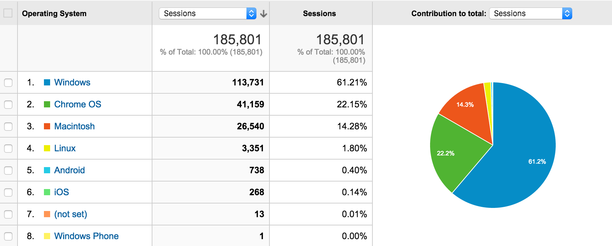

Cross Platform
The great part of building a browser specific extension is you’ll only need to test for that browser. With Chrome for the most part you’ll only need to support the latest browser depending on the APIs that you’re planning to use. If you are using a relatively new API you can either perform some feature checking in your code or you can add some version requirements to your manifest.
Even though you’ll get by not testing other browsers, you should do some checks across different operating systems. Depending on your application it may attract more users of one OS versus another - Tab Resize had the following distribution in the past 5 months:

Once you get some data you’ll be able to determine the tier 1 and 2 platforms to test on.
Although all the APIs should behave the same way, I’ve actually found a couple that act different in certain platforms. Differently may mean it still works or it may mean the API itself is completely broken.
If you do find an issue with one of the Chrome APIs you can file a bug or in all likelyhood search find an existing issue that’s similar your own.
As with everything else in life try to have unit and integration tests so regression bugs won’t pop up. And also be sure to test how upgrades interact with the prevsious version (especially if you are persisting any data or preferences). Users can always remove and reinstall but this adds to a poor user experience.